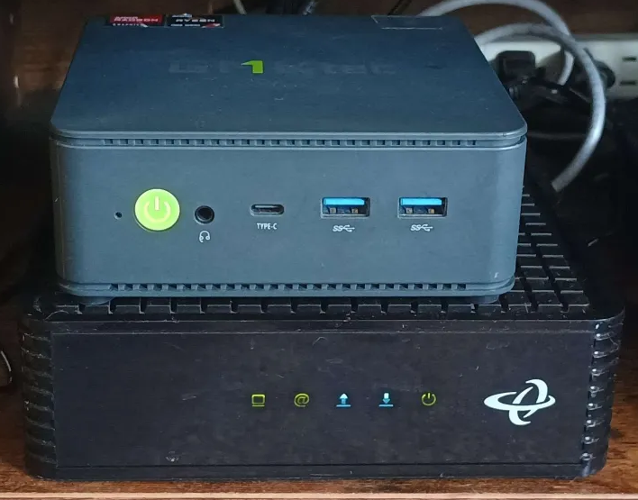

Homelabbing!
7/06/25So I've decided to start homelabbing after so many years of putting it off due to a multitude of excuses like being unable to find any reliable low powered machine and really, just finding a need for a homelab. Buuut because I have a newfound interest in Linux system administration after watching PewDiePie's own discover into the world of Arch and ricing, the no-brainer thing for me to do is to setup proxmox and start commandeering my own fleet of VMs to help study for certs and to use it for testing out various services. So for me personally, I really love mini PCs. Mini PCs includes everything that a typical laptop has to offer but with a tad bit more features, like more room for more custom peripherals and more beefier components for virtualization. These computers are quiet too! Just about any pc should do the trick though! For now, my main setup shall be a simple mini PC! It's a GMKtec NucBox K5.
This beast of a machine packs an 8-core AMD Ryzen CPU, 2TB of storage and 32GB of DDR5 memory. Plenty for my
virtualization and sandboxing needs. Apps I am currently running:
- Discord Bots
- Proxmox
- PiHole
- RHEL
- VaultWarden

homelabprojects